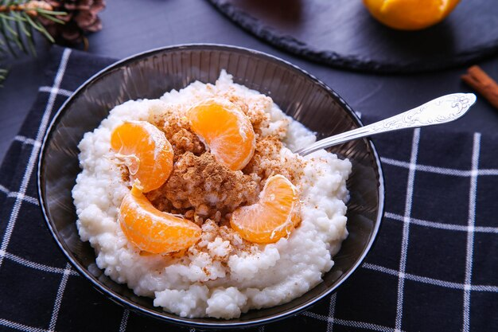

Receta de Arroz con Leche

Ingredientes
- 1 litro de leche
- 1 taza de arroz
- 1 rama de canela
- 1 cáscara de limón
- 1 taza de azúcar
- Canela en polvo para decorar
Instrucciones
1. Enjuaga el arroz con agua fría para quitar el exceso de almidón.
2. En una olla grande, calienta la leche con la rama de canela y la cáscara de limón a fuego medio.
3. Añade el arroz y cocina a fuego lento, removiendo ocasionalmente, durante 40-45 minutos.
4. Agrega el azúcar y cocina por 10 minutos más, removiendo constantemente.
5. Retira del fuego, deja enfriar un poco y sirve con canela en polvo espolvoreada por encima.
Video de Instrucción
Tabla Nutricional
| Cantidad por porción (180g) | % Valor Diario | |
|---|---|---|
| Calorías | 153 kcal | 8% |
| Grasas Totales | 1.8g | 3% |
| Grasas Saturadas | 1.1g | 5% |
| Grasas Trans | 0 | - |
| Sodio | 200mg | 8% |
| Carbohidratos Totales | 29g | 10% |
| Fibra Dietética | 0g | 0% |
| Proteínas | 5.3g | 7% |